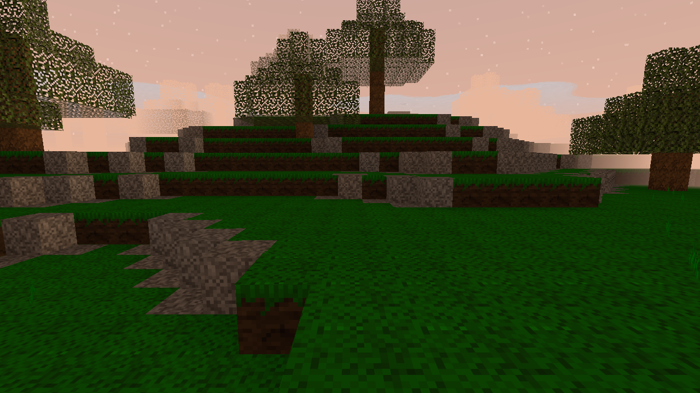

ГАЙД
Как играть. Если интересует почему всё устроено именно так — это в README: там журнал решений, а не руководство.
Первый запуск
Скачайте архив релиза, распакуйте, запустите primitive_client.exe. Текстуры встроены
в исполняемый файл, папка assets рядом с ним не обязательна — игру можно
перенести одним файлом куда угодно.
Откроется меню: Singleplayer, Multiplayer, Settings, Quit. Везде работают и мышь, и клавиатура: стрелки и Enter, Esc — назад.
Одиночная игра
- Singleplayer → NEW
- Имя мира. Сид можно оставить пустым — подставится значение по умолчанию.
- ТИП МИРА — «ОБЫЧНЫЙ» или «ТЕСТОВЫЙ».
- CREATE, затем PLAY.
Ничего запускать отдельно не нужно: клиент поднимает сервер внутри себя, на локальном адресе. Мир недоступен из сети, и две копии игры спокойно работают рядом.
Горячие клавиши в списке миров: N — создать, Del — удалить, Enter — играть.
Миры
Мир — это папка в saves/ с файлом world.toml, где записаны имя и сид.
Скопируйте папку — скопируется мир.
Сид хранится с миром, а не в настройках. Сид и есть мир: изменив его, вы уроните сохранённые правки на совершенно другой рельеф.
Что в мире
Океаны с настоящей глубиной и песчаными пляжами по краю, реки, которые вьются по низинам и впадают в море, горные хребты со снегом на вершинах и пещеры под всем этим. Биом под ногами показывает F3. Реки текут только по низкой земле: там, где начинается подъём, русло мелеет и сходит на нет.
Тестовый мир
Ровное поле с построенным на нём образцом каждой механики. Он существует, чтобы механику можно было увидеть глазами, не проходя к ней весь путь.

Управление
| Клавиша | Действие |
|---|---|
| WASD | движение |
| Мышь | обзор (клик по экрану — захват курсора) |
| Пробел | прыжок (тратит выносливость); в воде — грести вверх (удерживать) |
| Shift | бежать (тратит выносливость) |
| ЛКМ | сломать блок; по игроку или животному — ударить |
| ПКМ | поставить блок; по костру — поджечь кремнём или подбросить дров; по ящику — открыть |
| Alt + ПКМ | положить один слой сыпучего вместо целого блока |
| 1–9, 0 | выбрать блок |
| Колесо мыши | листать блоки (в инвентаре — список рецептов) |
| I | инвентарь и крафт (и закрыть ящик) |
| E | съесть то, что в выбранной ячейке |
| Q | выбросить один блок (с Shift — всю стопку) |
| R | возродиться после смерти |
| Enter | чат (Esc — отмена, Enter — отправить) |
| Esc | пауза: продолжить / настройки / выйти в меню / выход |
| F | туман вкл/выкл |
| F3 | панель статистики |
| F11 | полный экран (запоминается) |
Клавиши переназначаются: Настройки → CONTROLS. Enter и Esc — нет: это выходы из того, что они открывают, и игрок, переназначивший их, остался бы без выхода.
Чат
Enter открывает строку ввода, ещё раз Enter — отправляет, Esc — отменяет.
Пока строка открыта, игрок стоит. Последние сообщения видны и без открытого чата — гаснут
примерно через десять секунд. Команды пишутся туда же: строка с / уходит парсеру,
/help — список.
Инвентарь и ящики
Нижний ряд сетки — это и есть хотбар: те же десять слотов, что видны в игре. Три ряда над ним — рюкзак. Справа — крафт.
| Действие | Что делает |
|---|---|
| ЛКМ по слоту | взять стопку, следующий клик — положить |
| ЛКМ по занятому | одинаковые блоки сливаются, разные меняются местами |
| ПКМ со стопкой в руке | положить половину и продолжать держать остальное |
| Shift + ЛКМ | отправить стопку с пояса в рюкзак и обратно |
| 1–0 над слотом | отправить этот слот на такое место пояса |
| Q над слотом | выбросить (с Shift — всю стопку) |
| TIDY PILE | свернуть рюкзак: одинаковое к одинаковому |
Инструменты не складываются в стопку: топор, кирка, нож и мотыга занимают слот по одному. Наведение на слот показывает название, количество и вес — от веса зависят скорость и урон от падения.
Ящики
Сундук из восьми досок. ПКМ по нему открывает экран: сверху его сорок слотов, снизу ваши. STORE ALL и TAKE ALL перекладывают всё, что влезает, одним нажатием.
Содержимое живёт на сервере, рядом с миром. Двое могут стоять у одного ящика, и увидеть разное невозможно: сервер рассылает не «ваш ход принят», а то, что в ящике теперь. Сломать ящик — высыпать его: всё, что внутри, падает вещами на его место.
Крафт
Рецепт — это набор ингредиентов, а не узор на сетке: раскладывать ничего не нужно. Строка показывает картинками, что уйдёт и что получится.
| ЛКМ по строке | сделать один раз |
| ПКМ по строке | сделать столько раз, на сколько хватит |
| Наведение | подсвечивает в сетке слоты с нужными ингредиентами |
Справа в строке — сколько раз можно сделать сейчас (x12), либо чего не хватает
(need 4), либо no room, если результату некуда лечь. Ингредиент,
которого мало, нарисован тусклым.
С чего начать
- Доски из бревна и обратно, камень и песок из булыжника, мульча из листвы
- Палки — из двух досок, 4 штуки
- Волокно из травы: солома, пучок травы, связанные палки
Каменный век — восемь строк одной цепочкой
- Отщепы — из кремня
- Обработанное древко — палка и отщеп
- Три головки: ножа, топора и кирки
- И сами нож, топор, кирка: головка + древко + волокно
Ни один инструмент нельзя сделать в обход головки и древка — это главное, что стоит знать про этот раздел меню. Три инструмента, а не лестница кирок: нож, топор и кирка делают разное, а не одно и то же лучше.
Здоровье, голод, еда
Высота — это то, что вас убивает
Три блока сходят с рук, шесть — царапина, двенадцать заберут половину, восемнадцать — всё. Полный рюкзак почти удваивает счёт: спуск в шахту налегке и спуск с добычей — разные спуски. Вода отменяет падение целиком.
Выносливость
Тратится на бег, прыжки и копание. Полный запас — двадцать две секунды бега или около дюжины прыжков; пустой запас прыжок не даёт вовсе. Выдохшись, вы копаете вдвое медленнее, но копаете: из ямы, в которой не получается сломать блок перед собой, выхода нет вовсе.
Голод
Тратит не время, а работа. Стоя на месте, вы опустошите шкалу за сорок минут — то есть никогда. Копание, бег и прыжки идут сверху.
- Ниже 70 % — раны перестают затягиваться. Полоска в этот момент темнеет.
- На нуле — начинает уходить здоровье: полторы минуты от полного.
Съесть — клавиша E, тем, что в выбранной ячейке. На полный желудок еда не тратится.
| Что | Насколько сытно |
|---|---|
| Ягоды | 2 |
| Гриб | 1.5 |
| Сырое мясо | 2.5 |
| Вяленое мясо | 7 |
| Жареное мясо | 10 |
Вся таблица — в одной строчке: жареное мясо вчетверо сытнее сырого, и это единственная причина, по которой костёр окупается.
Драки
ЛКМ по игроку в пределах вытянутой руки — полтора здоровья за удар, не чаще раза в 0.6 секунды. Четырнадцать ударов до смерти. Сквозь стену не бьёт, и всё, что можно проверить, проверяет сервер.
Здоровья мало — темнеют края экрана. Середина не трогается: там прицел и то, на что вы смотрите.
Огонь и металл
Факел
Свет, который можно унести с собой. Делается из любой палки и волокна, зажигается о горящий очаг. Он кончается: головка выгорает за сорок пять секунд, и в руке остаётся палка с обугленным концом. Новое волокно снова делает из неё факел.
Костёр
ПКМ по костру — поджечь кремнём или подбросить дров. Дождь его гасит. На нём жарят мясо и плавят медь — держать огонь зажжённым выгодно ровно поэтому.
Металл
- Медь и олово — в тигле у любого огня: руда, уголь, тигель и форма
- Бронза — только в горне
- Железо — через домницу, крицей
Из слитков в горне куются девять инструментов: нож, топор и кирка каждого из трёх металлов. Каждому нужны обточенное древко и шкура.
Сушилка превращает шкуру в кожу сама: тот же контейнер, что и очаг, но топливо у него — небо.
Инструменты тупятся
Износ живёт на стопке, а не на блоке. Тупой инструмент копает медленнее, а не ломается на середине удара.
Вода, лёд, сыпучее
- Вода течёт и сохраняется; тонкая плёнка высыхает. Поверхность воды ниже блока — по ней видно, что это вода, а не стекло.
- В воде вы плывёте, а не тонете. Пробел — грести вверх, удерживать. Под водой кончается воздух — появляется отдельная полоска.
- Лёд даёт разгон: сцепление — это не скорость.
- Сыпучее лежит слоями — восьмыми долями блока. Alt + ПКМ кладёт один слой.
- Песок падает. Глина и гравий — отдельные материалы со своими правилами.
- Снег ложится сверху и смахивается почти без затрат сил.
- Деревья падают — и падают на кого-то.

Настройки
Settings в главном меню или в паузе. Меняются на месте, сохраняются, когда вы уходите с экрана, — отдельной кнопки «сохранить» нет.
| Настройка | Что делает |
|---|---|
| NAME | ваше имя на серверах |
| RENDER DISTANCE | дальность прорисовки — главный рычаг для FPS |
| FIELD OF VIEW | поле зрения |
| MOUSE SENSITIVITY | чувствительность мыши |
| MASTER VOLUME | общая громкость |
| MUSIC | музыка — единственное, что в игре звучит |
| VSYNC | вертикальная синхронизация (применяется сразу) |
| FOG | туман |
| AMBIENT OCCLUSION | затенение в углах |
| LOCAL WORLD DISTANCE | дальность в одиночной игре |
| MENU BACKGROUND | плитка из блоков за меню (по умолчанию выключена) |
| Transparent leaves | сквозь крону видно дерево; выключите, если не хватает кадров |
| Grass & stone distance | самое дешёвое, что можно отдать за кадры |
| Cloud cover | сколько неба закрыто облаками |
Дальность ограничена ещё и сервером: если он готов отдавать меньше, чем вы просите, действовать
будет его значение. Реальное видно в F3 как r8.
Интерфейс говорит на четырёх языках: английский, простой английский, русский и польский.
Имена блоков и рецептов остались английскими намеренно — это идентификаторы
в blocks.toml и в сохранениях.
Где что лежит
client_settings.toml | настройки клиента |
servers.toml | список серверов |
saves/ | миры одиночной игры, по папке на мир |
settings.toml | настройки сервера |
world/ | мир отдельного сервера |
plugins/ | плагины сервера |
crash.log | появляется только при падении |
assets/ | не обязательна |
Свои текстуры
Положите папку assets/textures рядом с исполняемым файлом. Файл на диске
перекрывает встроенный с тем же именем, так что заменить можно и одну текстуру.
Имена — в assets/textures/blocks.toml.
Свои звуки
cargo run --release -p primitive_client -- --export-sounds soundsИгра запишет весь банк — по три варианта на звук — и по сорок секунд каждого из шести
настроений музыки. Правьте в любом редакторе и кладите обратно в assets/sounds.
Частота и разрядность любые.
dig.stone.wav заменит все три варианта одним звуком; dig.stone.0.wav,
.1, .2 — по одному, и тогда разнообразие сохранится.
Правило то же, что у текстур: файл на диске побеждает встроенный.
Если что-то пошло не так
Игра не запускается. Рядом с исполняемым файлом появится crash.log —
в нём причина. Самое частое: слишком старые драйверы видеокарты.
Мало FPS. Уменьшите RENDER DISTANCE — самый сильный рычаг. Панель F3 показывает время кадра, число вызовов отрисовки и сколько чанков отсечено.
Нет музыки. Звуковые эффекты вырезаны — их отсутствие не поломка. Если молчит
и музыка, на консоли будет строка no sound: ... с причиной. Гарнитуру, воткнутую
после запуска, игра не подхватит — перезапустите. Что выбрано, видно в F3 в строке audio.
Не подключается к серверу. Экран показывает причину целиком. Проверьте: сервер запущен, порт совпадает, порт открыт в брандмауэре.
Мир пропал из списка. Проверьте, что папка мира лежит в saves/
и в ней есть world.toml.
Кикает за полёт. Значит, полёт не выдавали: /fly от мода сообщает
античиту. Проверьте, что мод загружен (/mods) и что команда действительно ответила.
Полная версия инструкции — GUIDE.md в репозитории.